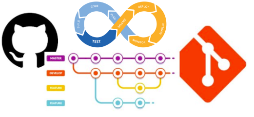

Git Flow CI and CD

## Udacity git commit Style guide
``` type: Subject body footer ```
- feat: A new feature - fix: A bug fix - docs: Changes to documentation - style: Formatting, missing semi colons, etc; no code change - refactor: Refactoring production code - test: Adding tests, refactoring test; no production code change - chore: Updating build tasks, package manager configs, etc; no production code change